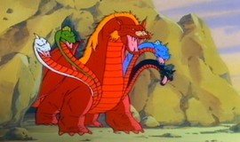
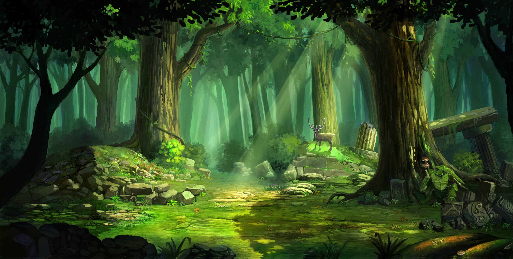
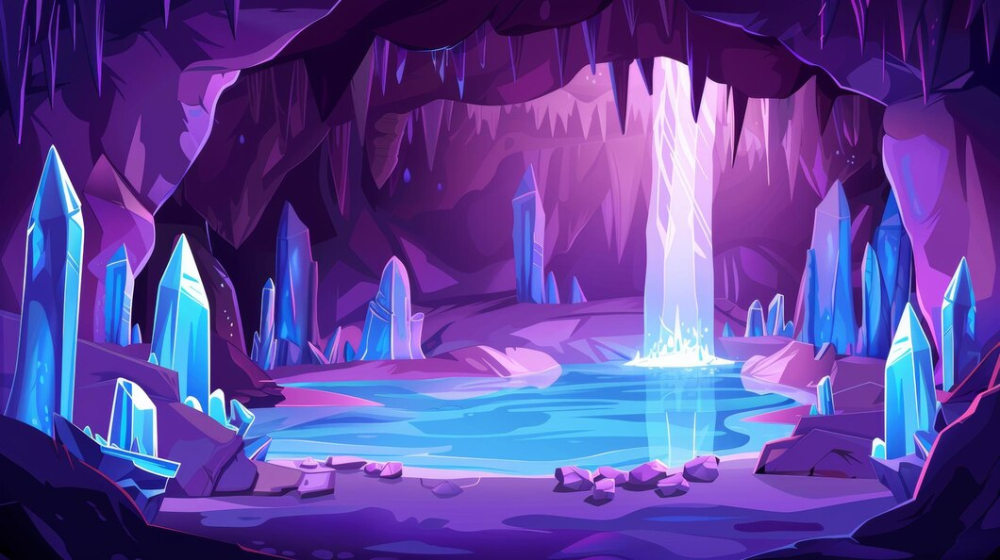

Em uma aldeia cercada de montanhas, circulam histórias sobre um cristal perdido, escondido em uma caverna antiga. Dizem que ele concede um desejo a quem achar.

Durante a jornada, encontra aliados inesperados: uma elfa sábia e um guerreiro destemido. Ao chegar à caverna, um enigma guardado por um dragão impede a passagem.

Infelizmente sua aventura se encerrou e você preferiu continuar na Vila.

Ao final, o cristal brilha intensamente, revelando não apenas um desejo, mas o verdadeiro valor da amizade e da coragem.